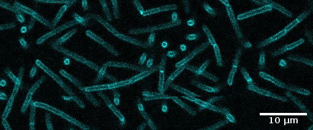
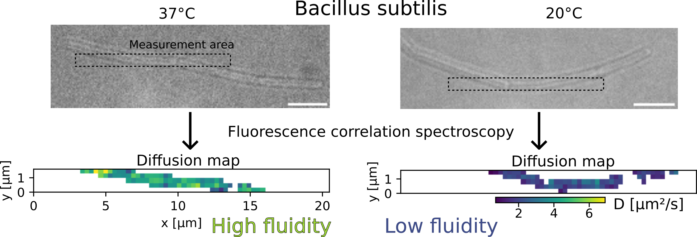
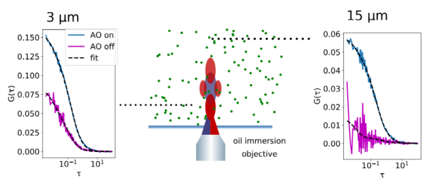
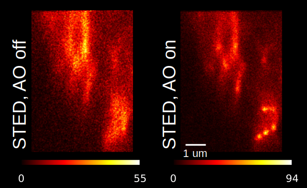

I am an engineer in optics turned biophysicist. I am generally interested in developing new technologies for microbiology, and apply those to my research. I am currently interested in the plasma membrane of the bacterium Bacillus subtilis.

Projects

Quantification of membrane fluidity in bacteria using TIR-FCS
In this work, we show how to quantify membrane fluidity in bacteria: we add a fluorescent membrane marker (Nile Red) to the membrane of the bacterium Bacillus subtilis and monitor its diffusion speed using total internal reflexion fluorescence correlation spectroscopy (TIR-FCS). More details in this project here, or read the publication on BiorXiv.

z-STED imaging and spectroscopy of biological membranes
We used the excellent performance of our z-STED microscope to study the structure and dynamics of the plasma membrane of living cells. Read the paper in Biophysical Journal .

Adaptive optics for STED-enhanced Fluorescence Correlation Spectroscopy
Aberrations are particularly detrimental to STED-FCS in 3D. We developed a correction method to fix this issue to enable new set of measurements, for instance to measure nanoscale diffusion in the cytoplasm. You can read the publication in Optics Express.

Adaptive optics for STED imaging
We developed methods to correct the optical aberrations that degrade the image quality when focusing a STED beam through thick samples.
{kind=link}
{kind=link}
{kind=link}